Fall of Glast Heim (Español)
Resumen
| Requisitos | |
|---|---|
| Nivel Base: | 130/170 |
| Lugar de Inicio: | glast_01 241/290 |
| Recompensas | |
| Experiencia: | Normal: 16,250,000 (Base) y 12,000,000 (Job) Hard: 70,000,000 Base y 47,500,000 Job |
| Items: | Normal: 9  Curse Devoured Crystals Curse Devoured CrystalsHard: 6  Curse Devoured Gemstones, y 5 Curse Devoured Gemstones, y 5  Curse Devoured Crystals Curse Devoured Crystals
|
Oscar es un viajero dimensional que nos invita a presenciar el trágico pasado de Glast Heim.
Himmelmez, una Valkyrie malvada, ha puesto un Dimensional Orb en las profunidades del castillo de Glast Heim, con el objetivo de absorber esta fuente inagotable de energía desde los alrededores y transferirla hacia otra dimensión.
Para poder detener sus planes malévolos, el Sage Varmundt planeó destruir el orbe, atacándolo con todas sus energías.
El mejor amigo del Rey Schmidt, Heinrich, no fue capaz de convencer a Schmidt de dejar atrás a su gente. Luego de descubrir el plan de Varmundt, Schmidt se sacrificó a sí mismo para poder destruir el orbe.
El espíritu de Schmidt fue maldecido por el orbe, y Oscar te invita a regresar a esta grieta dimensional y ayudar a recolectar fragmentos de los recuerdos de Schmidt para sus investigaciones.
Walkthrough - Modo Historia
- Habla con Oscar (
glast_01 241/290) y escucha lo que tiene para decirnos. - Habla nuevamente con el para generar la instancia y entrar.
- Camina hacia la Ilusión de Varmunt y habla con el para averiguar mas sobre lo que está ocurriendo.
- Camina y baja por las escaleras y habla con Oscar.
- Continúa bajando por las escaleras hasta que aparezca el Rey Schmidt.
- Debes decirle Please go back now. Se negará y seguirá adelante junto a ti.
- Debes acercarte a los Knight Survivors y decirles que abandonen el lugar. Algunos de ellos te atacarán debido a la maldición. Debes hablar al menos con 6 de ellos.
- Tras esto, camina hacia el portón.
- Si el Rey Schmidt muere o desaparece, tendrás que hacer de nuevo los pasos anteriores. De todos modos, al segundo intento no puedes fallar y podrás continuar a pesar de que el mercenario haya muerto.
- Avanza hacia la siguiente área tras clickear el portón.
Los caminos de este mapa son raros tras cruzar el warp, sigue la pared izquierda hasta que llegues al puente.- 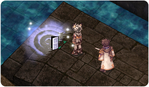
- Tras cruzar el puente, verás aparecer nuevamente al Rey Schmidt. Háblale para unir fuerzas de nuevo.
- Sigue avanzando hasta que te encuentres con Heinrich y habla con el.
- Varmunt aparecerá cerca tuyo, habla con el para continuar.
- A continuación, habla con el Rey Schmidt.
- Oscar aparecerá y nos dirá que la historia aún no ha cambiado. Habla con el y selecciona I'll follow you.
- Serás enviado a la siguiente área, donde tendrás que observar la escena que se desarrollará.
- Habla con Varmunt para continuar la escena.
- Habla con el una vez mas.
- Habla con Oscar para abandonar la instancia. Serás recompensado con algo de experiencia.
- Habla nuevamente con Oscar fuera de la instancia.
Has desbloqueado las modalidades Normal y Hard para Glast Heim Purification!
Has desbloqueado las máquinas expendedoras OSC!


Walkthrough - Glast Heim Purification
Esta instancia se divide en dos modos: Normal y Hard. El modo Normal sirve para comprar y encantar 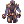 King Schmidt's Suit y  King Schmidt's Manteau, mientras que el modo Hard nos permite acceder a las seis King Schmidt's Insignias (Accessorios).
King Schmidt's Manteau, mientras que el modo Hard nos permite acceder a las seis King Schmidt's Insignias (Accessorios).
Por lo tanto, en el modo Normal recibirás 9 Curse Devoured Crystals y tiene 1 día de cooldown, mientras que en el modo Hard recibirás 6  Curse Devoured Gemstones y 5 Curse Devoured Crystals, pero tiene 3 días de cooldown. Las instancias son idénticas, a excepción de la dificultad de los monstruos en el modo Hard.
Curse Devoured Gemstones y 5 Curse Devoured Crystals, pero tiene 3 días de cooldown. Las instancias son idénticas, a excepción de la dificultad de los monstruos en el modo Hard.
- Habla con Oscar y selecciona la modalidad a generar.
- Elimina los monstruos en la primera sala y serás enviado a la que sigue.
- Camina hacia Oscar y elimina todos los monstruos en la sala.
- Repite este proceso hasta que llegues a la sala final junto con Oscar.
- Camina hacia Oscar para iniciar la pelea final.
La pelea con el Boss puede ser un poco complicada, revisa abajo para mas información sobre las mecánicas de esta batalla. - Tras derrotar al Cursed King, Oscar aparecerá.
- Habla con el y serás recompensado con experiencia y 9 Curse Devoured Crystals (Easy Mode), o 6 Curse Devoured Gemstones y 5 Curse Devoured Crystals (Hard Mode).
Batalla contra Cursed King
- Cursed King: A medida que le hagas mas daño al MVP, subirá su nivel de Furia. Mientras el MVP se encuentre en este estado de "furia", hará mas daño y se curará mas. El daño requerido para "enfurecer" al MVP es bastante bajo, por lo que no suele ser buena idea matarlo lentamente. Una buena estrategia para derrotarlo es esperar a que aparezcan los Seals, o bien matarlo rápidamente con una party.
- De todos modos, ten cuidado con alargar demasiado la batalla, ya que el Cursed King puede volverse un gran desafío cuando se encuentra "enfurecido". Si tiene bajo HP, comienza a usar Earthquake y Comet, además de Damage Heal, lo que curará al MVP cada vez que reciba daño mágico.
- Seals: Cuatro sellos aparecen aleatoriamente durante la batalla. Puedes activarlos al caminar cerca de ellos y reducirán la "furia" del MVP y desactivarán su curación durante 15 segundos.
- Cursed Flames: Durante la batalla, habrán oleadas de Cursed Flames. El daño de estas llamas puede variar dependiendo del nivel de "furia" del MVP. El daño de estas llamas son considerados como ataques melee, por lo que pueden ser evitados usando Safety Wall, White Imprison o simplemente equipo que reduzca el daño.
Mantenerse en medio de la sala puede ser buena estrategia para evitar las llamas, ya que los espacios entre estas oleadas generalmente convergen en el centro. - Oscar: Aparecerá durante la batalla. Al hablar con el, aparecerá una barra de carga, y si logra terminar exitosamente, una de las dos oleadas (vertical u horizontal) desaparecerán por un periodo completo.
Mob
Normal Mode
| Imagen | Nombre | Nivel | HP | Tamaño / Raza / Elemento |
|---|---|---|---|---|

|
Cursed King Schmidt | 110 | 9,200,000 | Medium / Demi-human / Neutral 3 |
| 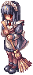 | Fallen Maid | 110 | 68,145 | Medium / Demon / Dark 2 |
| 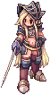 | Mad Knight | 110 | 46,350 | Large / Undead / Fire 3 |
| 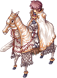 | Cursed Knight | 111 | 58,650 | Large / Demi-human / Holy 2 |
| 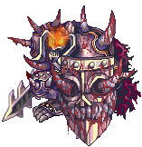 | Dark Guard | 175 | 1,152,000 | Large / Undead / Dark 4 |
Hard Mode
| Imagen | Nombre | Nivel | HP | Tamaño / Raza / Elemento |
|---|---|---|---|---|

|
Cursed King Schmidt | 170 | 45,000,000 | Medium / Demi-human / Neutral 3 |
| Fallen Maid | 110 | 68,145 | Medium / Demon / Dark 2 | |

|
Mad Knight | 175 | 1,140,000 | Large / Undead / Fire 3 |
| Cursed Knight | 175 | 1,380,000 | Large / Demi-human / Holy 2 | |
| Dark Guard | 175 | 1,152,000 | Large / Undead / Dark 4 |
Cartas
| Carta | Va en | Efecto |
|---|---|---|
| Armadura |
Incrementa un 40% el daño físico contra enemigos de propiedad Fire. |
Equipo

Todos los items son creados mediante la máquina expendedora OSC1052.
| Imagen | Nombre | Descripción | Creación |
|---|---|---|---|
| 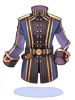 | King Schmidt's Suit [1] |
Incrementa un 10% el daño físico y mágico contra enemigos de tamaño Medium y Large.
Max HP +5%, Max SP +5%.
Defensa: 150 Peso: 90 Nivel Mínimo: 130 Equipable por: Todos |
|
| 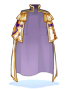 |  King Schmidt's Manteau [1] King Schmidt's Manteau [1]
|
Incrementa un 2% el daño físico y mágico contra enemigos de propiedad Fire y Shadow cada 3 niveles de refine. Equipo: Garment Defensa: 70 Peso: 60 Nivel Mínimo: 130 Equipable por: Todos |
|
| 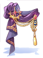 |  King Schmidt's Strong Insignia [1] King Schmidt's Strong Insignia [1]
|
Atk +10%.
ATK +25, Hit +10.
Peso: 20 Nivel Mínimo: 150 Equipable por: Todos |
|
| 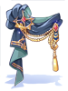 |  King Schmidt's Divine Power Insignia [1] King Schmidt's Divine Power Insignia [1]
|
MATK +10%.
MATK +25, reduce un 8% el tiempo de casteo variable.
Peso: 20 Nivel Mínimo: 150 Equipable por: Todos |
|
 King Schmidt's Hundred Luck Insignia [1] King Schmidt's Hundred Luck Insignia [1]
|
Incrementa un 7% el daño crítico.
Incrementa un 7% el daño crítico, ATK +5%.
Peso: 20 Nivel Mínimo: 150 Equipable por: Todos |
||
| 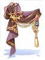 |  King Schmidt's Rigid Insignia [1] King Schmidt's Rigid Insignia [1]
|
Max HP +10%.
Max HP +5%, reduce el delay after skill un 5%.
Peso: 20 Nivel Mínimo: 150 Equipable por: Todos |
|

|
 King Schmidt's Flash Insignia [1] King Schmidt's Flash Insignia [1]
|
Incrementa un 5% la velocidad de ataque (reduce el delay after attack un 5%).
Incrementa un 3% la velocidad de ataque (reduce el delay after attack un 3%), CRIT +7.
Peso: 20 Nivel Mínimo: 150 Equipable por: Todos |
|

|
 King Schmidt's Thousand Bow Insignia [1] King Schmidt's Thousand Bow Insignia [1]
|
Incrementa un 7% el daño físico de rango.
Incrementa un 7% el daño físico de rango, ASPD +1.
Peso: 20 Nivel Mínimo: 150 Equipable por: Todos |

Encantos
Todos los equipos obtenidos mediante OSC1052 pueden ser encantados con la máquina expendedora OSC1127. El costo de cada encanto depende del equipo y es el siguiente:
 King Schmidt's Suit [1] = 5 Curse Devoured Crystals + 10
King Schmidt's Suit [1] = 5 Curse Devoured Crystals + 10  Coagulated Spells
Coagulated Spells- King Schmidt's Manteau [1] = 5 Curse Devoured Crystals + 10 Coagulated Spells
 King Schmidt's Insignias (cualquiera) = 10 Curse Devoured Gemstone + 40
King Schmidt's Insignias (cualquiera) = 10 Curse Devoured Gemstone + 40 Contaminated Magic
Contaminated Magic
Los encantos son completamente aleatorios y no pueden ser reiniciados. Sin embargo, puedes reemplazar encantos de forma individual
Casi todos los encantos son seguros, a excepción del último encanto en las insignias (2do slot), que tiene un 30% de probabilidades de fallar, lo que significa que perderás tu insignia. De todas formas, puedes elegir pagar 10 veces el costo original para eliminar esta probabilidad de fallo.
| King Schmidt's Suit [1]
| ||
|---|---|---|
| Encanto 4to Slot | Encanto 3er Slot | Encanto 2do Slot |


| King Schmidt's Manteau [1]
| ||
|---|---|---|
| Encanto 4to Slot | Encanto 3er Slot | Encanto 2do Slot |


King Schmidt's Strong,  Divine Power, Divine Power,  Hundred Luck, Hundred Luck,  Rigid, Rigid,  Flash o Flash o  Thousand Bow Insignias Thousand Bow Insignias
| ||
|---|---|---|
| Encanto 4to Slot | Encanto 3er Slot | Encanto 2do Slot |
|
||


Encantos Especiales
Los encantos especiales de las King Schmidt's Insignias pueden hacer combo con los encantos especiales de las Temporal Boots. Son efectos permanentes, por lo que siempre estarán activos mientras tengas equipados ambos items.
| Encanto Especial | Efecto |
|---|---|
 Flash Flash
|
En combo con  Speed of Light, incrementa un 30% el daño crítico. Speed of Light, incrementa un 30% el daño crítico.
|
 Strong Strong
|
En combo con  Bear's Might, incrementa un 25% el daño físico contra enemigos de todos los tamaños. Bear's Might, incrementa un 25% el daño físico contra enemigos de todos los tamaños.
|
 Thousand Bow Thousand Bow
|
En combo con  Hawk Eye, ATK +10%. Hawk Eye, ATK +10%.
|
 Divine Power Divine Power
|
En combo con  Runaway Magic, incrementa un 15% el daño mágico de todas las propiedades. Runaway Magic, incrementa un 15% el daño mágico de todas las propiedades.
|
 Rigid Rigid
|
En combo con  Muscular Endurance, reduce el after cast delay un 10%. Muscular Endurance, reduce el after cast delay un 10%.
|
 Hundred Luck Hundred Luck
|
En combo con  Lucky Day, ASPD +2. Lucky Day, ASPD +2.
|
Re-encantos individuales
Una vez tengas un item con todos los encantos posibles, puedes optar por reiniciar cada encanto de forma individual. Habla con Royal Outfitter, afuera de la instancia.
| Costo de reinicio cada slot | |||||
|---|---|---|---|---|---|
| King Schmidt's Suit [1]
|
King Schmidt's Manteau [1]
|
King Schmidt's Insignias (cualquiera)
| |||
| 4to slot | 175 Curse Devoured Crystal + 25 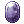 Coagulated Spell
|
4to slot | 175 Curse Devoured Crystal + 30 Coagulated Spell
|
4to slot | 15 Curse Devoured Gemstone + 60 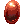 Contaminated Magic
|
| 3er slot | 250 Curse Devoured Crystal + 120 Coagulated Spell
|
3er slot | 300 Curse Devoured Crystal + 150 Coagulated Spell
|
3er slot | 50 Curse Devoured Gemstone + 200 Contaminated Magic
|
| 2do slot | 500 Curse Devoured Crystal + 250 Coagulated Spell
|
2do slot | 600 Curse Devoured Crystal + 300 Coagulated Spell
|
2do slot | 125 Curse Devoured Gemstone + 450 Contaminated Magic
|
Reciclaje de Equipo
Puedes reciclar equipos encantados en esta instancia para recibir un reembolso parcial en materiales. Para reciclar un item habla con OSC1198.
| Equipo | 1 encanto | 2 encantos | 3 encantos |
|---|---|---|---|
| 3~6 Curse Devoured Crystals
|
6~10 Curse Devoured Crystals
|
9~15 Curse Devoured Crystals
| |
| 3~6 Curse Devoured Crystals
|
6~10 Curse Devoured Crystals
|
9~15 Curse Devoured Crystals
| |
| 2~6 Curse Devoured Gemstones
|
4~12 Curse Devoured Gemstones
|
6~18 Curse Devoured Gemstones
|
Al reciclar, también tienes una probabilidad de conseguir uno de estos costume headgears al azar, cada vez que recicles equipo.
| Costume Drooping Schmidt | Costume Drooping Oscar | Costume Drooping Heinrich |
|---|---|---|

|

|